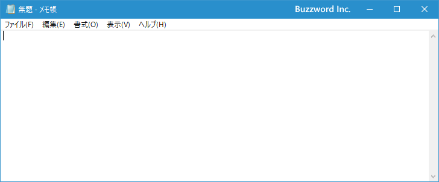
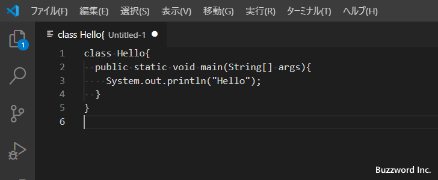
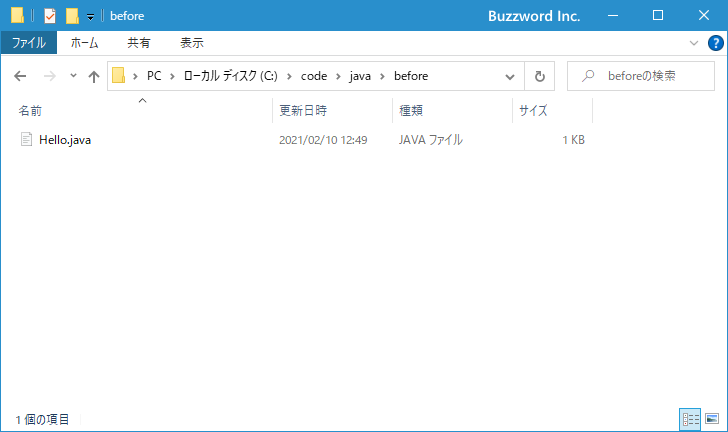

- Home ›
- Java入門 ›
- Javaプログラムの事前準備
Javaを使ったプログラムの作成と保存
Java を使ったプログラムを作成するための最初の一歩として、 Java を使った簡単なプログラムを実際に作成し保存するまでの手順について解説します。
テキストエディタを使ってプログラムを記述する
Java などのプログラミング言語を使ったプログラムではテキストエディタを使ってプログラムを記述します。他にも統合開発環境と呼ばれる便利なツールがいくつも提供されていますが、この Java 入門では手軽に始めることができるテキストエディタを使っていきます。統合開発環境を使ったプログラムの開発方法は別のところで解説する予定です。
テキストエディタもいくつもの種類があり、 Windows 環境であれば標準でメモ帳というテキストエディタが用意されています。

2021年2月現在ではメモ帳でも文字コードとして UTF-8(BOM無し) で保存することができるようになっていますので、高機能ではありませんがメモ帳でも問題なく開発が可能です。ここでは Visual Studio Code というエディタを使います。
それではテキストエディタを起動し、次のようなJavaを使ったプログラムを記述してください。
class Hello{
public static void main(String[] args){
System.out.println("Hello");
}
}
プログラムの内容についてはここでは解説は行いませんので、そのまま入力してください。大文字と小文字も区別されます。実際に入力すると次のようになります。

これで簡単なプログラムが作成できました。
プログラムのファイル名の付け方
Java を使って記述したプログラムは、保存する時は クラス名.java という決められた名前で保存する必要があります。
クラス名.java
クラス名というのは先ほどのプログラムでいうと class のあとに記述されている Hello がクラス名となります。
class Hello{
public static void main(String[] args){
System.out.println("Hello");
}
}
よってこのプログラムを保存するときのファイル名は Hello.java となります。
ソースファイルを保存する
それではプログラムを保存します。プログラムが保存されたファイルのことを一般的にソースファイルと呼ぶことが多いです。保存する場所はどこでも構いません。今回は C:\code\java ディレクトリの中にプログラムは保存していく予定です。
ファイル名として先ほど解説した名前の付け方に従って Hello.java という名前で保存しました。

これで Java を使ってプログラムを作成し、ソースファイルを保存することができました。
-- --
Java を使った簡単なプログラムを実際に作成し保存するまでの手順について解説しました。
( Written by Tatsuo Ikura )

著者 / TATSUO IKURA
初心者～中級者の方を対象としたプログラミング方法や開発環境の構築の解説を行うサイトの運営を行っています。